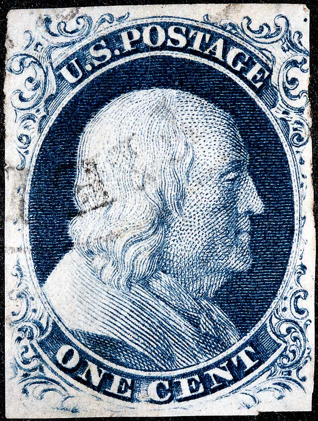
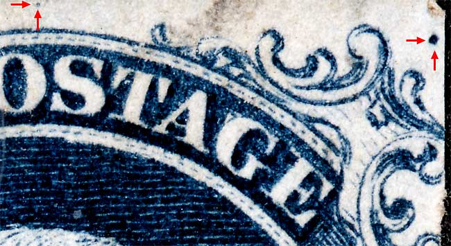
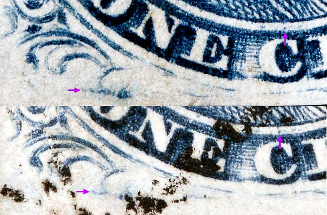
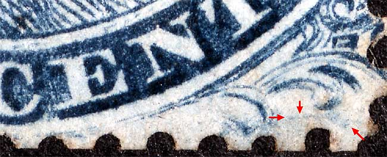
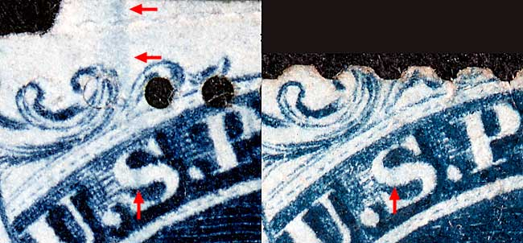

1¢ Franklin Issue of 1851-1857, PLATE 4 Position 2L4 |
Type II, Relief A Issued both imperforate (Scott 7) and perforate (Scott 20). Plate 4 changed it's appearance as many plating marks faded away due to plate wear, and new plating marks developed over the life of the plate. One of the most annoying aspects of trying to identify Plate 4 positions is the appearance and disappearance of these plating marks. Other plating notes: Courtesy of Marc Bedrin, Joel Doane, George Kopecky |
|  |
| Figure 1. (BELOW) A small dot above and between the O and S of POST and the heavy guide dot between Ornaments Z/L as illustrated in the Neinken plating diagram.
 |
| Figure 2. (BELOW) An interesting blur of color extending from the left scroll. Neinken illustrates a similar feature on Position 1L4.
 |
| Figure 3. (BELOW) The blur below the scroll and right plume is illustrated in the plating diagrams. Similar blurs appear on most Plate 4 top row stamps.
 |
| Figure 4. (BELOW) Not illustrated in the Neinken plating diagram is a faint blur of color in the S of U.S. Some impressions will show this blur extending upwards between Ornaments U/V and on into the top margin.
 |
| DISCLAIMER and COPYRIGHT INFORMATION: Thanks for visiting this site. I hope you learn something new as we are making new discoveries all the time. You, the visitor, have my permission to link to my pages and to share the INFORMATION with others. The images themselves fall under the fair use guidelines established by the United States Congress and Copyright law. Basically contact us before using. I also ask in return that you send me an e-mail if I have made a mistake, or have made some other technical blunder that in my rush to put these pages up would cause the visitor confusion. Please also visit my other website at www.slingshotvenus.com. and support the live music arts. While your there, be sure to purchase our music. There are not many philatelic rock stars around and we need all the help we can get. :-) I can be reached at: nerdman@ix.netcom.com |